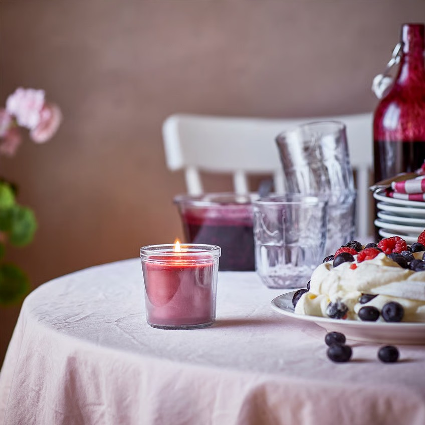
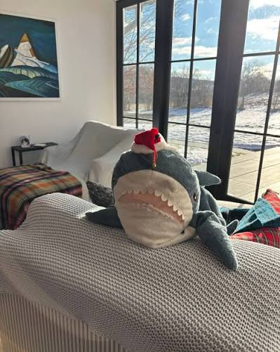

Ikea

Ikea has really good furniture, building, and food. Growing up my mom always took me to Ikea with my friends. We would play pretend family in the makeshift rooms.
Decor
Ikea decor will always be my favorite. A few months back my room felt super basic. After a big trip to Ikea a few months back ago, my room felt and looked super cozy. Their berry scented candles are really good
It smells so sweet and yummy.

Stuffed Animals
Their shark plushies are very cute and fun to hug. Personally it is my favorite.
The monkey plush is medium sized but would be a nice touch to your bed.
Lastly, the fat teddy bear would be so much fun to lean on and I plan on getting it the next time I go to Ikea.

Best foods
- Cinnamonrolls
- Swedish meatballs
- Chocolate conspiracy cake
- Soft serve ice cream
- Breakfast plate with pancakes